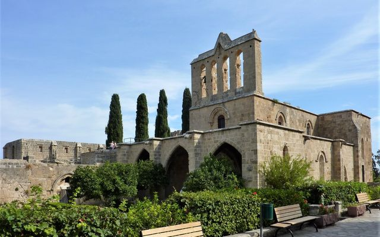

Göbeklitepe y las Colinas de Piedra
Las Colinas de Piedra (Taş Tepeler) de Şanlıurfa son un grupo de asentamientos neolíticos que obligan a repensar cómo se volvió sedentario el ser humano.

Las primeras aldeas de Anatolia: Aşıklı Höyük y Çatalhöyük
Anatolia central ofrece algunos de los ejemplos más conocidos del mundo del paso de la caza y la recolección a la agricultura.

Los hititas y los reinos neohititas
Extendido desde Anatolia central hasta Siria, el reino hitita fue una de las grandes potencias del antiguo Oriente Próximo.

Los urartianos
Extendido desde el lago Van por el este de Anatolia, el reino de Urartu es conocido por sus fortalezas, su ingeniería hidráulica y su trabajo del bronce.

Frigios y lidios
Dos grandes reinos de la Anatolia poshitita: la Frigia del rey Midas y Lidia, que acuñó las primeras monedas.

Licia
En la península de Teke, donde la montaña se une al mar, vivieron los licios, conocidos por sus tumbas rupestres y su propia liga de ciudades.

Caria
Desde Bodrum hasta el interior de Muğla, Caria es la tierra del Mausoleo, una de las Siete Maravillas del mundo antiguo.

Jonia y las ciudades antiguas del Egeo
Con ciudades como Éfeso, Mileto y Priene, Jonia fue una de las cunas de la filosofía, la ciencia y el urbanismo.

Troya y Pérgamo
Un viaje por el norte del Egeo, de la Troya de la leyenda a Pérgamo, uno de los reinos más brillantes del mundo helenístico.

El reino de Comagene
El pequeño pero ambicioso reino de Comagene, a orillas del Éufrates, quiso unir Oriente y Occidente incluso en sus dioses.

Anatolia en época romana
Con teatros, calles columnadas y acueductos, Roma convirtió Anatolia en una de las provincias más ricas de su mundo.

Bizancio y el cristianismo primitivo
De Constantinopla a Capadocia y de Trebisonda a Chipre, el legado bizantino de iglesias, mosaicos y monasterios está por toda Anatolia.

Capadocia: chimeneas de hadas, iglesias rupestres y ciudades subterráneas
En Capadocia, modelada por volcanes y viento, la gente excavó su vida en la roca blanda durante miles de años.

Los selyúcidas y los beylicatos
Asentados en Anatolia tras Manzikert, los turcos hicieron de Konya su capital y crearon una nueva cultura de caravasares, madrasas y arte de azulejos.

El Imperio otomano
Nacido como un pequeño principado en Söğüt, el Estado otomano se convirtió en un imperio de tres continentes y más de seis siglos.

Las capas de Chipre: de la Edad del Bronce a los otomanos
En el norte de Chipre, encrucijada del Mediterráneo oriental, se despliegan cuatro mil años de historia, del comercio del cobre a las catedrales góticas.

De Galípoli a la República
Los años que van de la campaña de Galípoli a la guerra de independencia y la proclamación de la República siguen vivos en museos y casas de toda Anatolia.